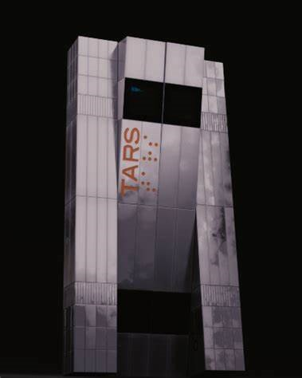
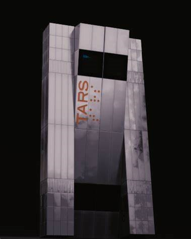

Cooper

The main character of the movie, Cooper was a pilot for NASA before they were decomissioned. He is played by Mathew McConaughey.
The main character of the movie, Cooper was a pilot for NASA before they were decomissioned. He is played by Mathew McConaughey.


Murphy is shown throughout the movie and is shown in three different time periods. She is played by Mackenzie Foy, Jessica Chastain, and Ellen Burstyn (Youngest to oldest)

Brand, one of the other members of the team, is a specialist of human biology and finding signs of life. She is played by Anne Hathaway.
 

One of the robots used to accompany the Endurance mission was TARS. The voice actor for him was by Bill Irwin.